Warning
Page en cours de construction
Perception catégorielle des phonèmes#
Le chapitre précédent nous a conduit à la conclusion que l’observation approfondie d’enregistrements de sons de parole n’était pas suffisante pour déterminer les mécanismes perceptifs impliqués dans la compréhension des phonèmes. Il est donc nécessaire de mettre en œuvre des expériences psychoacoustiques afin de tester directement la perception humaine.
Dans ce qui suit, nous allons employer diverses variantes de la méthode des stimuli constants pour identifier les caractéristiques acoustiques (ou indices acoustiques) qui permettent au système auditif humain de distinguer les consonnes /b/ et /d/. Bien entendu, ce contraste particulier a été choisi à titre d’illustration, et les mêmes approches peuvent être déployées pour explorer la perception de n’importe quel phonème.
Comme nous l’avons vu au chapitre 1, la plupart des méthodes psychophysiques nécessitent au préalable de choisir une “dimension d’intérêt”, c’est à dire un paramètre physique dont nous souhaitons connaître l’influence sur la perception. Dans un premier temps, nous nous intéresserons à la dimension fréquentielle du spectrogramme, c’est à dire que nous nous poserons la question de la contribution des différentes fréquences pour l’intelligibilité des sons de parole. Pour cela, la démarche la plus simple et la plus directe consiste à filtrer les sons et à évaluer l’effet de ce filtrage sur leur compréhension.
Approche par filtrage#
La première expérience de psychoacoustique visant à étudier la perception des phonèmes fut mise au point par Harvey Fletcher dans les années 1920, alors qu’il travaillait aux Bell Laboratories. Ce centre de recherche, pionnier dans le domaine des télécommunications, disposait alors de systèmes électroniques innovants pour l’époque qui permettaient de filtrer les sons de façon contrôlée, selon des paramètres de fréquence ajustables. Fletcher eut l’idée d’appliquer ces outils à l’étude de la perception de la parole, marquant ainsi le début de la phonétique expérimentale.
Le principe de son approche était relativement simple : retirer progressivement des bandes de fréquences d’un son et évaluer si celui-ci demeure intelligible, de façon à identifier les composantes fréquentielles critiques pour la compréhension des sons de parole. Fletcher constitua pour cela un grand corpus d’enregistrements de syllabes consonne-voyelle différant par la consonne initiale (/ba/, /da/, /ga/, /pa/, /ta/, /ka/, /fa/, /sa/, etc.). Chaque enregistrement fut ensuite soumis à différents filtrages passe-haut ou passe-bas, pour ne conserver que les informations au-dessus ou en-dessous d’une certaine fréquence de coupure variable. Les volontaires devaient écouter ces stimuli filtrés, dans un ordre aléatoire, et identifier à chaque fois le phonème perçu.
Méthodologie (Fletcher, 1922; Li & Allen, 2009)
Stimuli : multiples enregistrements de syllabes formées par une consonne suivie de la voyelle “a” : “pa”, “ta”, “ka”, “fa”, “sa”, “cha”, “ba”, “da”, “ga”, “va”, “za”, “ja”, “ma”, “na”, et deux autres comportant des consonnes n’existant qu’en anglais – soit un total de 16 syllabes possibles. Ces enregistrements sont filtrés passe-bas ou passe-haut avec différentes fréquences de coupure.
Dimension d’intérêt : fréquence de coupure du filtrage
Tâche : intelligibilité (“quelle syllabe avez-vous entendu ?”). Le participant ou la participante répond en appuyant sur un des 16 boutons correspondant aux 16 syllabes possibles.
Méthode : méthode des stimuli constants
Paradigme : -
L’exemple sonore suivant reproduit cette expérience princeps. Pour les besoins de cette démo, un unique enregistrement de parole est considéré : un “ba” clairement intelligible. En appliquant un filtrage passe-bas avec des fréquences de coupure de plus en plus basses, nous supprimons progressivement les fréquences aigües du signal, créant ainsi un continuum acoustique le long de notre dimension d’intérêt. Écoutez ces sons de plus en plus altérés en essayant de déterminer à partir de quel point du continuum vous ne parvenez plus à identifier le “ba” initial.

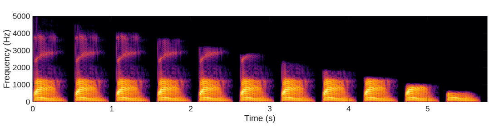
Fig. 96 Continuum de parole filtrée passe-bas. Le premier spectrogramme correspond à la syllabe “ba” clairement intelligible. Les fréquences hautes sont ensuite progressivement filtrées par pas successifs (une nouvelle bande de 450 Hz est retirée à chaque stimulus), de sorte que le dernier stimulus ne conserve que les fréquences de 0 Hz à 500 Hz.#
La plupart des auditeurs et auditrices rapportent que la qualité du son se dégrade progressivement le long du continuum, mais que le “ba” devient véritablement inintelligible à partir du neuvième stimulus – c’est à dire quand la fréquence de coupure atteint 1400 Hz. Pour comprendre la raison de cette transition abrupte, il est utile de représenter les positions des formants F1, F2, F3 et F4 pour l’ensemble des stimuli du continuum.

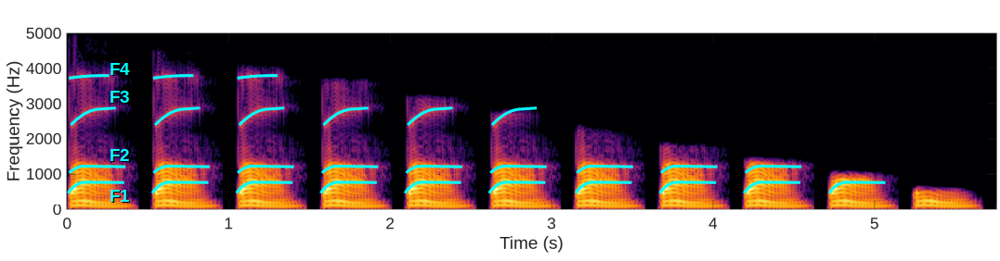
Fig. 97 Même continuum que Fig. 96, avec les trajectoires des formants F1, F2, F3 et F4 représentées en bleu.#
Les stimuli étant peu à peu privés de leurs composantes hautes fréquences, les formants disparaissent eux aussi progressivement en commençant par les derniers. Ainsi le F4 est supprimé à partir du stimulus numéro 4 et le F3 à partir du stimulus numéro 7. De façon intéressante, le moment où le son “ba” devient subitement inintelligible correspond à la disparition du F2, à partir du dixième stimulus.
Il est également possible de réaliser la même expérience en supprimant progressivement les basses fréquences pour ne conserver que les fréquences aigües – ce qui correspond à un filtrage passe-haut – comme dans la démo suivante :

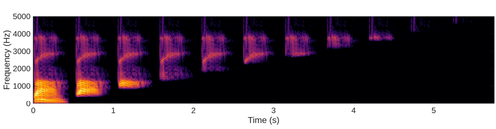
Fig. 98 Continuum de parole filtrée passe-haut. Le premier spectrogramme correspond à un son “ba” clairement intelligible. Les fréquences basses sont ensuite progressivement filtrées par pas successifs (une nouvelle bande de 450 Hz est retirée à chaque stimulus), de sorte que le dernier stimulus ne conserve que les fréquences de 4550 Hz à 5000 Hz.#
Dans ce second exemple, le son “ba” devient inintelligible à partir du stimulus numéro 4. La figure suivante qui représente les trajectoires des formants confirme que, là encore, cette transition brutale d’une syllabe claire à un son incompréhensible correspond au moment de la disparition du F2.

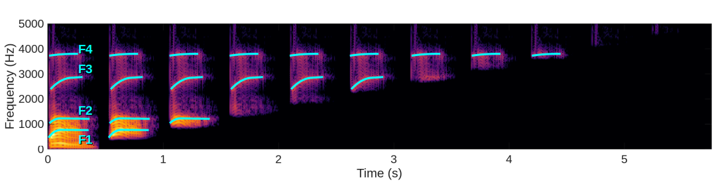
Fig. 99 Même continuum que Fig. 98, avec les trajectoires des formants F1, F2, F3 et F4 représentées en bleu.#
Ces deux exemples sonores semblent donc pointer vers la même conclusion : en l’absence de F2, la consonne “b” n’est pas intelligible. Autrement dit, notre cerveau s’appuie sur le F2 pour reconnaître ce phonème.
L’expérience menée par Fletcher était bien sûr plus rigoureuse et mieux contrôlée que la démo ci-dessus (voir encart Méthodologie) ; en particulier les sons correspondant à différentes syllabes et différents filtrages étaient présentés dans un ordre aléatoire. La figure suivante correspond à une réplication récente de cette expérience par l’équipe de Jont Allen à l’Université d’Illinois. Le pourcentage de réponses correctes est ici représenté en fonction de la fréquence de coupure, pour une syllabe “ba” filtrée soit passe-bas (trait rouge), soit passe-haut (trait bleu pointillé). On constate que, dans les deux cas, l’intelligibilité diminue brutalement en dessus ou au dessous de 1500 Hz environ, c’est-à-dire dans la région du F2, en accord avec nos observations.

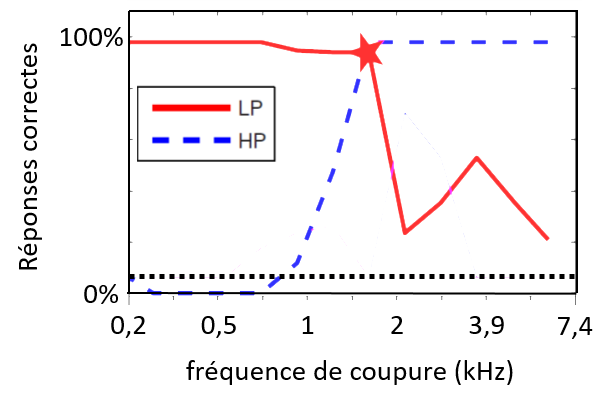
Fig. 100 Evolution de l’intelligibilité de la syllabe “ba” filtrée passe-haut (trait bleu pointillé) ou passe-bas (trait rouge), en fonction de la fréquence de coupure. Seules les réponses aux essais où la syllabe “ba” sont présentées ; néanmoins, l’expérience comprenant 16 réponses possibles, le taux de réussite dû à la chance est donc de 1/16 = 6.25% (ligne pointillée noire). Figure adaptée de Li, Menon & Allen (2010).#
Cette approche peut être également appliquée à l’analyse d’autres consonnes (Fig. 101). Les courbes obtenues diffèrent selon les phonèmes, suggérant que les indices acoustiques impliqués dans leur identification varient d’un phonème à l’autre.

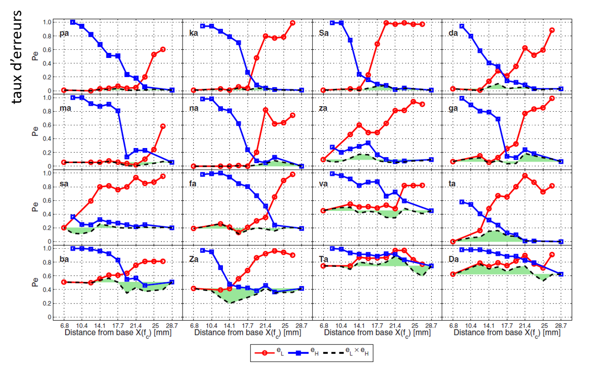
Fig. 101 Même représentation que Fig. 100 pour toutes les consonnes utilisées dans l’expérience. Attention, l’axe des ordonnées correspond ici au taux d’erreurs, et donc inversé par rapport à la figure précédente. Figure adaptée de Li & Allen (2009).#
Ce premier type d’expérience nous enseigne ainsi que le formant F2 est essentiel à la bonne compréhension de la syllabe “ba”. Nous allons à présent examiner plus précisément quelles caractéristiques de ce formant sont déterminantes.
Approche par synthèse vocale#
Dans les années 50, l’équipe d’Alvin Liberman aux Haskins Laboratories développa une approche complémentaire pour identifier les indices acoustiques utilisés dans la compréhnesion des phonèmes, et en particulier pour explorer le rôle de la transition du formant F2 dans dans l’identification du phonème “b”. Les scientifiques s’appuyèrent pour cela sur un système appelé Pattern Playback, l’un des tout premiers synthétiseurs vocaux, mis au point quelques années auparavant. Le pattern playback permettait de “jouer” des spectrogrammes de parole dessinés manuellement sur une bande transparente. Sans entrer dans les détails, il était composé d’une “tête de lecture” devant laquelle défilait la bande peinte, et d’un système de conversion des motifs en sons de différentes fréquences. La figure suivante illustre le principe de l’appareil tandis que la vidéo plus bas, extraite d’un documentaire d’époque, permet de voir le Pattern Playback en fonctionnement.

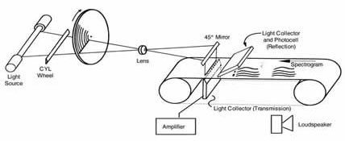
Fig. 102 Schéma de fonctionnement du Pattern Playback. Le tapis roulant correspond à la bande transparente sur laquelle sont dessinés des motifs spectrographiques. Ceux-ci passent entre un faisceau lumineux et une série de photorécepteurs, ce qui permet de “lire” la composition spectrale dessinée à chaque instant, alors que la bande progresse. Ce système de tête de lecture est ensuite connecté à un amplificateur qui restitue sous forme de son chaque fréquence lue. Figure issue de Cooper, Liberman, Borst (1951)#
Munie de ce nouvel outil, l’équipe de Liberman entreprit d’explorer la perception des phonèmes. La synthèse vocale offrait en effet un avantage décisif : elle permettait de manipuler de façon fine et contrôlée n’importe quel paramètre du son, afin d’observer son impact sur la perception auditive. Une expérience marquante, publiée en 1954, illustre cette démarche : elle porte sur la perception des consonnes plosives, en particulier les syllabes “ba”, “da” et “ga”. À partir d’une représentation spectrographique du son “ba”, les scientifiques produisirent tout d’abord une version synthétique à l’aide du Pattern Playback. Ils générèrent ensuite une série de variantes de ce son, en modifiant uniquement la fréquence d’attaque du formant F2. Les sons synthétiques étaient présentés dans un ordre aléatoire à des participants et participantes, qui devaient les catégoriser comme “ba”, “da”, ou “ga”.
Méthodologie (Liberman, Delattre, Cooper, 1954)
Stimuli : multiples syllabes synthétiques reproduisant les trajectoires des formants de “ba”, mais avec une modification de la fréquence d’attaque du deuxième formant.
Dimension d’intérêt : fréquence d’attaque du 2ème formant.
Tâche : catégorisation “ba”/”da”/”ga”
Méthode : méthode des stimuli constants
Paradigme : yes/no
La Fig. 103 représente un continuum similaire à celui utilisé par Liberman, créé ici au moyen d’un autre outil de synthèse vocale rudimentaire, le synthétiseur de Klatt. Tous les sons de parole qui le composent sont exactement identiques, à l’exception de l’attaque du F2 (voir Fig. 104) qui évolue par pas égaux depuis 900 Hz dans le premier son jusqu’à 2400 Hz dans le dernier. Vous pouvez écouter ce continuum ci-dessous pour déterminer si cette modification affecté votre compréhension de la syllabe. Par souci de simplicité, les stimuli sont ici joués dans l’ordre en commençant par la syllabe “ba” originale.

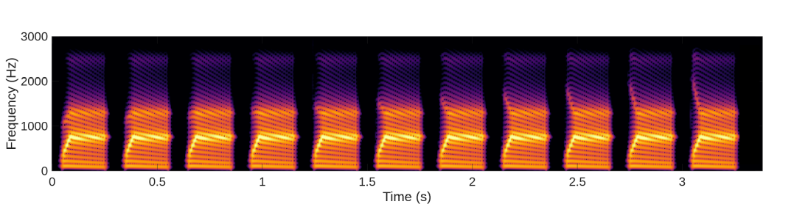
Fig. 103 Continuum de parole synthétique. Le premier son correspond à un “ba” généré avec un algorithme de synthèse rudimentaire (synthétiseur de Klatt). Un seul des paramètres acoustiques de ce stimulus est manipulé : la fréquence d’attaque du F2. Celle-ci est fixée à 900 Hz dans le premier stimulus, puis évolue par pas de 150 Hz jusqu’à atteindre 2400 Hz dans le dernier stimulus. En conséquence, la pente d’attaque du F2 est montante au début du continuum, mais descendante à la fin.#
Liberman et ses collègues observèrent que les participants et participantes percevaient les stimuli du continuum comme des “ba” pour les attaques de F2 basses, puis des “da” pour les attaques intermédiaires, et enfin des “ga” pour les attaques hautes. Puisque seul le F2 diffère entre les stimuli du continuum (Fig. 104), ce résultat confirme que le F2 joue un rôle clé dans la compréhension de la consonne “b” – comme nous l’avions noté dans l’expérience précédente. Mais l’expérience apporte surtout une précision décisive : ce n’est pas le F2 en tant que tel qui permet de distinguer le “b” du “d” et du “g”, mais plus spécifiquement la fréquence de départ de sa transition, au début de la syllabe.

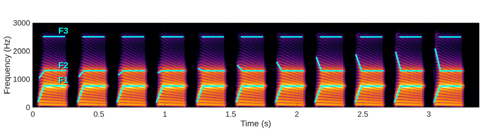
Fig. 104 Même continuum que Fig. 103, avec les trajectoires des formants F1, F2 et F3 représentées en bleu.#
Cette approche par continuum de parole synthétique s’avère donc particulièrement utile pour identifier les indices acoustiques impliqués dans la perception des phonèmes. En effet, elle permet de tester le rôle d’une caractéristique acoustique spécifique dans la compréhension des sons. Pour cela, il suffit aux scientifiques de construire un continuum de stimuli où seule cette caractéristique varie, puis d’observer si la perception évolue le long de ce continuum. Si c’est le cas, l’expérience valide l’implication de cette caractéristique dans la reconnaissance des phonèmes. On comprend dès lors que la méthode ait été largement employée, d’abord par l’équipe de Liberman pour explorer l’ensemble des consonnes (voir Fig. 105), puis plus récemment par d’autres équipes qui ont mis au point des stimuli synthétiques de plus en plus réalistes.

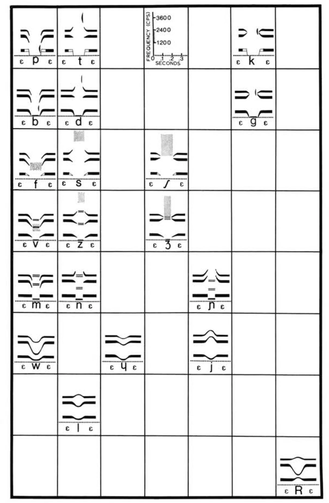
Fig. 105 Synthèse des résultats obtenus par l’équipe de Liberman en appliquant l’approche par continuum de parole synthétique à l’étude de différentes consonnes. Le spectrogramme de chaque consonne du français est ici représenté de façon schématique pour souligner les principaux indices acoustiques impliqués dans la compréhension. Figure issue de Delattre (1968).#
La perception catégorielle#
Les conclusions de l’expérience de Liberman et ses collègues ne se limitent pas à l’identification des indices acoustiques : elles portent aussi sur le mécanisme même de la perception des phonèmes. Observons de plus près les résultats de l’expérience du continuum synthétique, Fig. 106 (partie supérieure). Le pourcentage de réponses “ba”, “da”, ou “ga” est représenté en fonction du numéro du stimulus, c’est à dire le long du continuum. On constate que la compréhension “bascule” brutalement d’une syllabe à une autre. Autrement dit, la plupart des sons sont perçus sans ambiguïté comme un “ba”, un “da”, ou un “ga” (à l’exception des stimuli numéros 4, 9 et 10, seuls à produire des pourcentages de réponse intermédiaires entre 0% et 100%). Pourtant les stimuli eux mêmes sont séparés par pas égaux et progressifs. Il s’agit là de la première caractéristique qui définit la perception catégorielle des phonèmes : la reconnaissance des phonèmes est hautement discontinue le long d’un continuum physique linéaire. En d’autres termes, un son à mi-chemin entre “ba” et “da” n’est pas perçu comme une syllabe hybride intermédiaire entre le “ba” et le “da”, mais comme un exemplaire relativement clair de l’une ou l’autre de ces syllabes. La limite nette entre les catégories est appelée frontière phonétique puisqu’elle démarque les régions correspondant à l’un ou l’autre phonème.
Dans une seconde expérience, Liberman et collègues remplacèrent la tâche de catégorisation (le stimulus que vous venez d’entendre correspondait-il à un “ba”, un “da” ou un “ga” ?) par une tâche de discrimination (les deux sons que vous venez d’entendre étaient-ils identiques ou différents ?). Notez que la question porte bien sur le son lui-même et non sur la syllabe : ainsi, la réponse attendue pour deux versions distinctes de “ba” est “non, il s’agit de deux sons différents”. La méthodologie était par ailleurs identique à celle de l’expérience précédente.
Méthodologie expérience discrimination (Liberman, Delattre, Cooper, 1954)
Stimuli : multiples syllabes synthétiques reproduisant les trajectoires des formants de “ba”, mais avec une modification de la fréquence d’attaque du deuxième formant.
Dimension d’intérêt : fréquence d’attaque du 2ème formant.
Tâche : discrimination (deux stimuli sont présentés, soit identiques soit adjacents sur le continuum)
Méthode : méthode des stimuli constants
Paradigme : yes/no
La démo suivante comporte deux paires de sons de parole synthétique, situés à égale distance le long du continuum. La première correspond aux stimuli #4 et #8, la seconde aux stimuli #7 et #11. Chaque paire diffère donc par un même écart de 300 Hz dans l’attaque du F2. Écoutez attentivement les différences que vous percevez entre chaque paire de sons.
Bien que l’écart acoustique soit le même au sein de chaque paire, la première paire semble presque indifférenciable, tandis que la seconde est clairement composée de deux sons nettement distincts. Ce constat se généralise dans les résultats de la seconde expérience de Liberman et de ses collègues : la capacité à discriminer les syllabes synthétiques se révèle être inégale le long du continuum (Fig. 106, partie inférieure). Les différences de F2 entre stimuli adjacents étaient généralement imperceptibles, conduisant à des scores de discrimination proches de 50% – le taux de bonnes réponses obtenu en répondant au hasard. Pourtant, certaines paires de stimuli étaient nettement plus aisément différentiables, comme la paire composée des #3 et #4 (80% de réponses correctes) ou celle composée des #8 et #9 (75% de réponses correctes).
Mis en regard des résultats de catégorisation, ces données font apparaître un point essentiel : les paires perçues comme les plus différentes sont précisément celles qui se situent de part et d’autre d’une frontière phonétique (ou à proximité). À l’inverse, deux syllabes appartenant à la même catégorie sont particulièrement difficiles à discriminer. Ainsi, les différents exemplaires de “ba” se révèlent perceptuellement équivalents, puisqu’ils sont presque indistinguables, de même que les différents exemplaires de “da” ou les différents exemplaires de “ga”.

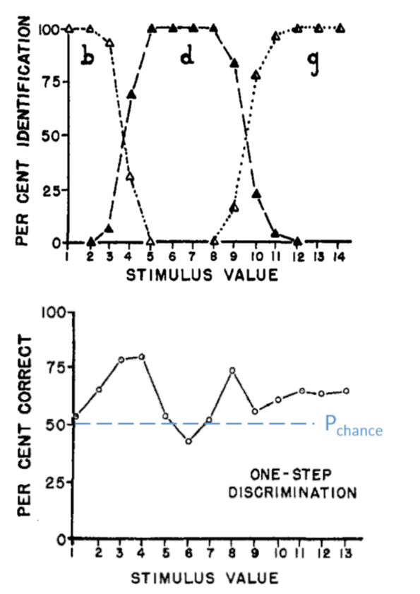
Fig. 106 Résultats des expériences de Liberman, Delattre, et Cooper (1954). En haut : tâche de catégorisation (pourcentage de réponses “ba”, “da” et “ga” le long du continuum de stimuli synthétiques). En bas : tâche de discrimination (pourcentage de réponses correctes dans la discrimination entre le stimulus N et le stimulus N+1).#
Les résultats des expériences de catégorisation et de discrimination conduisirent Liberman et son équipe à proposer une définition en deux points de la perception catégorielle :
La fonction psychométrique de catégorisation des phonèmes a une très forte pente (c’est à dire que peu de stimuli sont perçus de façon ambiguë).
La discrimination des sons de part et d’autre d’une frontière phonémique est facilitée. Au contraire, les exemplaires d’une même catégorie phonémique sont difficiles à différencier.
Comme évoqué précédemment, les études décrites ci-dessus sont des expériences princeps en psycholinguistique et ont depuis été répliquées de nombreuses fois. La figure suivante en fournit un exemple récent.

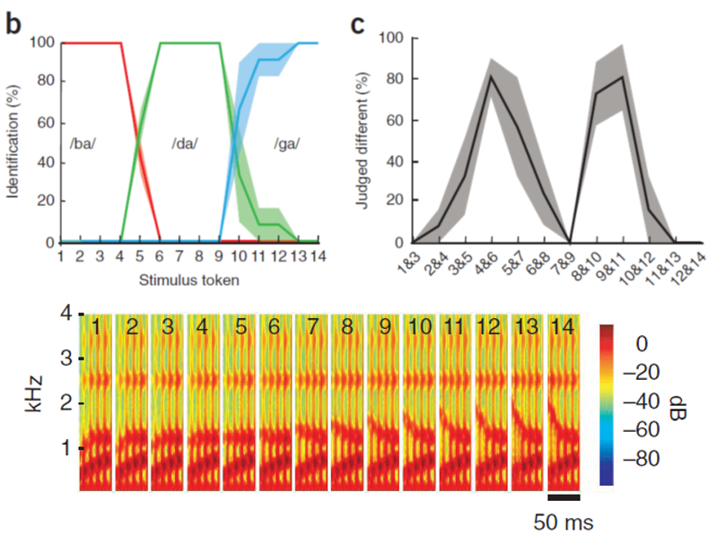
Fig. 107 Réplication récente de l’expérience de la Fig. 106 par Chang et al. (2010). En bas : continuum synthétique. EN haut résultats de la tâche de catégorisation (b) et de la tâche de discrimination (c)#
Ces observations apportent une réponse partielle au problème de la discrétisation soulevé au chapitre précédent. Bien que les phonèmes se distribuent dans un espace acoustique continu et présentent une grande variabilité, y compris entre différentes productions d’un même phonème (Fig. 90), leur perception, quant à elle, n’est pas uniforme. La catégorisation et la discrimination des sons de parole présentent des discontinuités marquées au niveau des frontières phonémiques, qui subdivisent l’espace acoustique en un nombre fini de catégories distinctes (comme illustré schématiquement Fig. 91). Autrement dit, le mécanisme de perception catégorielle permet de réunir et d’assimiler différentes productions d’un même phonème malgré les différences acoustiques existant entre celles-ci : deux sons différents peuvent être perçus comme identiques dès lors qu’ils appartiennent à une même catégorie phonémique. Plus précisément, notre système auditif tend à amplifier les différences acoustiques pertinentes pour le langage (celles qui séparent deux catégories phonémiques distinctes), tout en atténuant les variations non pertinentes (celles qui existent entre différentes productions d’un même phonème). La perception catégorielle joue donc un rôle fondamental dans la compréhension de la parole, renforçant sa robustesse en permettant de reconnaître un même phonème malgré la variabilité acoustique inhérente à ses productions.
Une question se pose alors : si la perception catégorielle constitue un mécanisme fondamental, comment se fait-il que les frontières qu’elle trace varient d’une langue à l’autre ? Toutes les langues ne possèdent en effet pas le même répertoire phonémique : ainsi, la distinction entre la première consonne des mots anglais “dough” et “thought”, ou celle entre la première voyelle des mots allemands “bieten” et “bitten”, n’existent pas en français. Les frontières phonémiques intégrées par notre système perceptif dépendent donc nécessairement de notre langue maternelle. C’est précisément ce que montre l’étude de Miyawaki et collègues, résumée en figure suivante. Des sujets anglophones et japanophones devaient discriminer des sons situés le long d’un continuum “r”-“l”, un contraste présent en anglais mais absent en japonais. De façon flagrante, seules les personnes anglophones étaient capables de percevoir des différences subtiles entre les sons au niveau de la frontière phonétique, tandis que les japanophones ne parvenaient à différencier aucune des paires. Des études menées sur des nourrissons indiquent que cette spécialisation se met en place très tôt au cours du développement. Durant les six premiers mois de leur vie, les nourrissons discriminent de façon relativement uniforme un large éventail de contrastes phonétiques, y compris ceux qui ne sont pas exploités dans la langue à laquelle ils sont exposés. À partir de six mois environ, leurs capacités perceptives commencent à se spécialiser : ils deviennent progressivement plus sensibles aux distinctions pertinentes pour leur langue maternelle, tandis que leur sensibilité à certains contrastes non pertinents dans celle-ci diminue. A l’âge adulte, les auditeurs et auditrices possèdent ainsi un système auditif “accordé” sur les catégories phonémiques de leur langue.

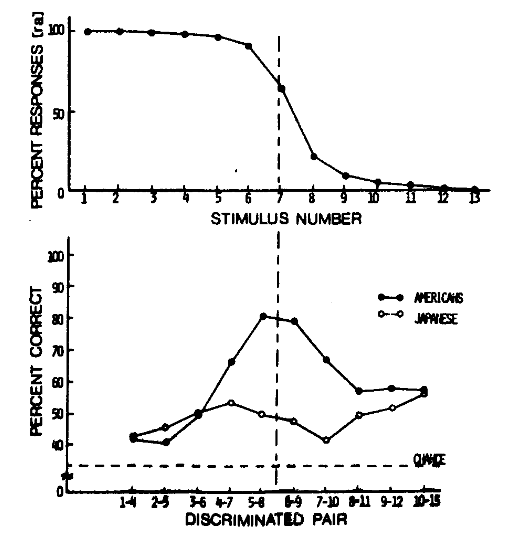
Fig. 108 Résultats de l’expérience de Miyawaki et collègues. Le panneau supérieur illustre les résultats des anglophones dans la tâche de catégorisation le long du continuum “r”-“l”. Comme attendu, la fonction psychométrique révèle une discontinuité marquée, caractéristique de la perception catégorielle. Le panneau inférieur compare les individus anglophones et japanophones sur la tâche de discrimination. Les premiers présentent une capacité de discrimination améliorée au niveau de la frontière phonétique, ce qui n’est pas le cas des seconds.#
Comme nous l’avons vu, un certain degré de perception catégorielle est indispensable à la compréhension des phonèmes. Pour autant, le système auditif n’élimine pas toute information non-linguistique. Ainsi, lorsque nous décrochons le téléphone, nous reconnaissons notre interlocuteur ou notre interlocutrice au son de sa voix, tout en comprenant son propos, c’est-à-dire en décodant les phonèmes. Ceci suggère que la catégorisation intervient relativement tard dans le traitement auditif, si bien que les informations non-linguistiques demeurent disponibles pour d’autres fonctions. Par ailleurs, certaines données de recherche indiquent que, même pour la compréhension de la parole, nous ne retenons pas seulement l’ “étiquette” correspondant aux phonèmes prononcés, mais des détails acoustiques plus fins : malgré notre capacité limitée à discriminer deux productions d’un même phonème, démontrée plus haut, il nous est cependant parfois possible de juger qu’un son constitue une “bonne” ou une “mauvaise” prononciation d’une même voyelle. Ceci suggère que la perception des phonèmes ne s’organise pas uniquement selon des frontières, mais également en termes de distance à des prototypes.
En distordant l’espace acoustique de manière à rapprocher deux productions d’un même phonème tout en éloignant les sons correspondant à deux phonèmes différents, la perception catégorielle apporte une réponse au problème de la discrétisation soulevé à la section précédente. Nous reviendrons plus loin sur les implications de ce phénomène, qui confère à notre système auditif une capacité d’abstraction essentielle pour la compréhension du langage. Dans l’immédiat, notons toutefois que le second problème, le “manque d’invariance”, reste entier : les éléments évoqués jusqu’ici ne permettent pas d’expliquer comment notre cerveau parvient à identifier de façon robuste des catégories de phonèmes dont les réalisations acoustiques semblent se recouvrir en grande partie (Fig. 92). C’est ce second problème que nous aborderons dans le chapitre suivant.
Références#
Li, F., Menon, A. & Allen, J. B. A psychoacoustic method to find the perceptual cues of stop consonants in natural speech. J. Acoust. Soc. Am. 127, 2599–2610 (2010).
Liberman, A. M., Delattre, P. C., Cooper, F. S. & Gerstman, L. J. The role of consonant-vowel transitions in the perception of the stop and nasal consonants. Psychological Monographs: General and Applied 68, 1–13 (1954).
Li, F. & Allen, J. B. Multiband product rule and consonant identification. J. Acoust. Soc. Am. 126, 347–353 (2009).
Delattre, P. From Acoustic Cues to Distinctive Features. PHO 18, 198–230 (1968).
Fletcher, H. The nature of speech and its interpretation. Journal of the Franklin Institute 193, 729–747 (1922).
Miyawaki, K. et al. An effect of linguistic experience: The discrimination of [r] and [l] by native speakers of Japanese and English. Perception & Psychophysics 18, 331–340 (1975).
Todorova, L. & Neville, D. A. Associative and Identity Words Promote the Speed of Visual Categorization: A Hierarchical Drift Diffusion Account. Front. Psychol. 11, (2020).